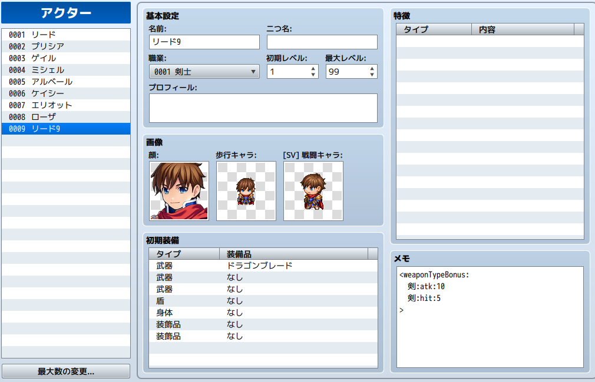

概要
アクター/職業/装備/ステートのメモ欄に指定の記述を行うことで、指定した武器タイプ・防具タイプを装備している際に指定した能力値または追加能力値を増減する特徴を追加します。
使用例

リード9君は武器タイプ剣を装備している場合に攻撃力+10、命中率+5％のボーナスを得ます。
ダウンロードページへのリンク
GitHub
ダウンロード方法については このブログは何？ を参照してください。
前提プラグイン
独自の特徴IDを確保する
独自の特徴を追加するため、利用には本プラグインが必要になります。